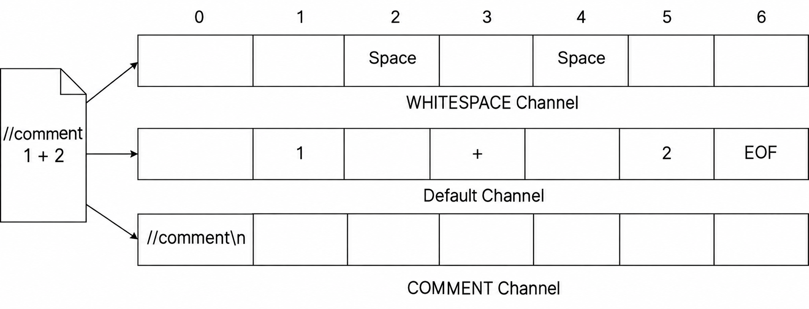

Week 3 - Lexer 2¶
Special Cases You May Encounter When Building a Lexer with ANTLR¶
The Longest-Match Principle¶
Let us discuss an interesting question. Suppose we have the following three lexer rules:
BE: '>='
BT: '>'
ASSIGN: '='
When the source code contains x >= 5, how will >= be recognized? As two separate symbols, > and =, or as a single >=?
By default, ANTLR follows the longest-match principle. This means that ANTLR tries to match as many characters as possible. Although > (one character) is a valid match, >= (two characters) is also valid and is longer. ANTLR therefore chooses the latter and recognizes >= as a token of type BE.
Non-Greedy Matching¶
Let us look at a more practical example.
Suppose we need to define a lexer rule for Java string literals. To simplify the problem, we will ignore escape sequences and other special cases for now and consider only the most basic form of a string:
A string is enclosed in a pair of double quotes
"and may contain a sequence of characters between them.
For example:
or:
In ANTLR lexer rules, . matches any single character, while * means that the preceding element may be repeated any number of times.
We might therefore naturally write:
Here is the structure:
At first glance, this rule seems to describe exactly what we want.
However, there is a problem: .* uses greedy matching by default.
Simply put, "greedy" means:
Match as many characters as possible while still allowing the entire rule to match successfully.
When There Is Only One String¶
First, consider the simplest input:
With the rule:
the entire string is matched correctly:
There does not seem to be a problem here.
In fact, if we use the non-greedy form introduced later:
with the same input:
we get the same result:
When does the difference become visible?
When the input has only one possible ending position, greedy and non-greedy matching usually produce the same result.
The difference becomes apparent when there are multiple possible ending positions.
When There Are Two Strings¶
Now consider this input:
We want the lexer to recognize two separate strings:
However, if we use:
the behavior is different.
When .* first reaches the double quote at the end of "aaa", it does not stop immediately.
This is because . can also match double quotes, spaces, and the characters that follow. As long as the entire STRING rule can still match successfully, .* keeps trying to consume more input.
It may therefore match from the first double quote:
all the way to the last double quote:
As a result, the entire input:
may be recognized as a single STRING token:
instead of the result we actually want:
Greedy matching
A simple way to think about greedy matching is:
Match more whenever possible.
However, "as much as possible" does not mean unconditionally matching to the end of the input. It means:
Match as much as possible while ensuring that the entire rule can still match successfully.
A More Obvious Example¶
Consider another input:
We still use:
The .* part starts matching the contents of the first string.
When it reaches the double quote at the end of "aaa", it does not stop immediately, because . can match that quote too.
The following text:
can also be consumed.
Even:
is just a sequence of ordinary characters to ., so it can continue matching those as well.
It only needs to leave the final double quote for the last part of the rule:
Therefore, the entire input:
may be recognized as a single STRING token:
In other words, everything in the middle:
is "swallowed" into the string.
This is clearly not the result we want.
Greedy matching does not simply consume the entire input
Suppose the input is changed to:
With the rule:
although .* tries to consume as much input as possible, the rule still requires a final:
It therefore cannot simply consume all of:
Otherwise, no double quote would remain to satisfy the final '"' in the rule.
The double quote at the end of "bbb" must therefore be left for the final '"'.
The resulting match is:
The remaining text:
is left for the lexer to process afterward.
More precisely:
Greedy matching consumes as many characters as possible while allowing the remaining parts of the rule to match successfully.
Using Non-Greedy Matching¶
To solve the problem above, we can use non-greedy matching.
In ANTLR, we can add a ? after *:
The string rule becomes:
Here:
still matches any number of characters, but its behavior differs from .*:
It matches as few characters as possible.
In other words:
It stops as soon as the remaining parts of the rule can match.
Revisiting Two Strings¶
Consider again:
Using:
the first part of the rule:
matches the first double quote:
Next, .*? begins matching:
When the lexer reaches the first double quote after aaa:
that quote can satisfy the final part of the rule:
Therefore, .*? stops immediately and leaves this double quote for the next part of the rule.
The first string is now fully matched:
The lexer then continues reading the remaining input.
After skipping the space, it encounters:
and starts matching the same STRING rule again.
The final result is:
Revisiting the More Complex Example¶
For the input:
if we use:
then .*? stops as soon as it reaches the first double quote after aaa.
The first result is therefore:
The lexer continues processing the remaining input and can also recognize:
and:
The text between them:
will not be incorrectly swallowed into the preceding string by .*?.
How should we understand *??
A simple way to think about *? is:
Match as little as possible. Stop as soon as the remaining parts of the rule can match.
Therefore, in:
the middle .*? stops at the first " that can serve as the end of the string, instead of looking for a later double quote.
A Simple Java String Rule¶
So far, we can use:
to recognize strings such as:
or:
However, to get a little closer to real Java strings, we need to consider a common case: double quotes may also appear inside a string.
For example, suppose we want the string to contain:
In Java, we can write:
Here:
represents a double quote within the string's contents, rather than the end of the string.
Therefore:
should be recognized as one complete STRING token, without ending early at the " in \".
To handle this case, we can first define a helper rule that matches \":
Then we define STRING:
Let us break this rule down.
First:
matches one double quote in the input:
The two occurrences of:
at the beginning and end of the STRING rule therefore represent the start and end of the string.
Next, consider the middle part:
Here:
means OR.
In other words:
means that either A or B can match at the current position.
For example:
can match:
or:
Therefore:
means:
At the current position inside the string, we can match either an
ESCAPED_QUOTEor an ordinary character matched by~["].
Let us examine these two parts separately.
First:
refers to the rule defined earlier:
Here:
matches one backslash in the input:
and:
matches one double quote in the input:
Together:
match:
In other words, ESCAPED_QUOTE specifically matches an escaped double quote inside a string.
Quotes in ANTLR rules
In ANTLR, single quotes '...' denote a literal string.
Therefore:
actually matches only one character in the input:
The two outer single quotes are part of ANTLR's grammar syntax; they do not appear in the actual input.
Similarly:
actually matches only one character in the input:
Because the backslash \ itself acts as an escape character, another \ is needed to escape it.
Therefore:
ultimately matches:
Next, consider:
The ~ means negation.
Thus:
represents a double quote ", while:
means:
Match any single character other than a double quote
".
For example, all of the following characters can be matched by ~["]:
So can spaces, backslashes, and other characters that are not ".
However:
cannot be matched by ~["].
Therefore:
can be understood as:
Each element inside the string can be:
- An escaped double quote
\";- Or any other character that is not a double quote
".
Finally, in the surrounding expression:
the * means that the expression in parentheses can repeat any number of times, including zero.
Therefore:
means:
The string may contain any number of escaped double quotes
\"or ordinary characters.
Putting the entire rule together:
we can divide it into three parts:
| Part | Purpose |
|---|---|
'"' |
Matches the opening double quote " |
(ESCAPED_QUOTE \| ~["])* |
Matches the string's contents: either \" or any character other than " |
'"' |
Matches the closing double quote " |
In other words, the structure of a STRING is:
The contents may repeatedly include:
- An escaped double quote
\"; - Any other character that is not a double quote
".
For example:
Here:
- The first
"marks the start of the string; - Text such as
helloandworldis matched by~["]; - The two occurrences of
\"are matched byESCAPED_QUOTE; - The final
"marks the end of the string.
Why can we use * again here?
You may notice that we just discussed the problem with greedy .*, yet we are now using:
Although this also uses *, it does not cause the same problem as .* above.
The key is that:
can match a double quote ".
Therefore, with:
.* can pass the double quote at the end of "aaa" and keep matching.
Now, however, we use:
which explicitly says:
A double quote
"cannot be matched.
When the lexer reaches an ordinary double quote:
neither alternative in (ESCAPED_QUOTE | ~["])* can continue matching:
~["]cannot match";ESCAPED_QUOTEcan only match\", not a standalone".
So even though * is greedy here, it can only match up to the position before this double quote.
The quote is then matched by the final part of the rule:
The key point here is therefore not whether matching is greedy, but that:
We have precisely restricted what
*can repeat, so it cannot cross the actual closing delimiter of the string.
For example, for:
we can roughly visualize the parts as follows:
" hello \" world \" "
^ ^ ^ ^ ^ ^
Start Ordinary Escaped quote Ordinary Escaped quote End
characters characters
The two occurrences of:
are each matched as a whole by:
Their double quotes are therefore not mistaken for the end of the string.
The result:
is recognized as one complete STRING token.
Consider another example:
The lexer can recognize two strings:
and:
The text:
remains part of the first string's contents.
What is fragment?
In the rule above, we used:
A fragment can be understood as a helper rule in the lexer.
Other lexer rules can reference it, but it does not produce a token on its own.
For example:
For the input:
the lexer produces only one STRING token, with no additional ESCAPED_QUOTE tokens.
Fragments are commonly used to extract lexical patterns that we want to reuse or name separately, making lexer rules clearer.
For example:
For the input:
the lexer produces one INT token rather than several DIGIT tokens.
This is a simplification
Real Java strings support many other escape sequences, such as:
and others.
Here, we are using Java strings to develop our understanding of lexical analysis. For now, we only require support for:
Other escape sequences are not required at this stage.
From these examples, we can see that:
.*matches as many characters as the rule allows: this is greedy matching;.*?stops as soon as the remaining parts of the rule can match: this is non-greedy matching;fragmentdefines a helper rule in the lexer and does not produce tokens on its own;- When strings can contain special sequences such as
\", we can use more precise lexer rules to describe the permitted contents.
Whitespace and Comments¶
In most programming languages, whitespace (such as spaces, tabs, and line breaks) plays an important role in separating tokens, but usually does not participate in parsing. During compilation, we want the lexer to recognize whitespace to separate tokens, without passing that whitespace to the parser and adding to its workload.
Otherwise, because whitespace can appear between any two tokens, we would have to account for every possible occurrence in our grammar rules. For example, a simple rule:
might have to become:
This would make grammar rules unnecessarily complex, confusing, and prone to errors.
ANTLR provides a simple mechanism to solve this problem: recognize certain tokens and discard them immediately. Just add -> skip to the rule:
Like whitespace, comments may appear throughout the code, but we usually do not want them to participate in parsing either. You can also handle comments with -> skip. Think about how you would define lexer rules for single-line and multi-line comments.
Bring Back the Comments! (Optional)¶
If our only goal is to implement a compiler, recognizing and discarding comments is usually acceptable. But suppose we want to use ANTLR to build a source code translator, such as converting code from an old language to a new one. ANTLR can handle this too: you can think of the new language as a special intermediate representation. Preserving comments then becomes essential; otherwise, the translated code would be much harder to read.
We still do not want comments to be sent to the parser and increase its workload. Can we store these "skipped" tokens, such as comments and whitespace, in one "box," put meaningful tokens in another, and pass only the contents of the latter to the parser?
Yes. ANTLR supports multiple lexical channels. These channels are like the "boxes" described above.
Note that ANTLR imposes a restriction: custom channels cannot be used in a .g4 file that defines both lexer and parser rules. You must therefore split lexer and parser rules into separate files. Separating them is good practice in itself: it improves reuse (for example, allowing one set of lexer rules to serve multiple parsers) and makes the file structure clearer.
Here is an example:
// File: CalculatorLexer.g4
lexer grammar CalculatorLexer;
channels { WHITESPACE, COMMENTS }
INT : [0-9]+ ;
ADD : '+' ;
SUB : '-' ;
WS : [ \t\r\n]+ -> channel(WHITESPACE);
SL_COMMENT : '//' .*? '\n' -> channel(COMMENTS);
First, lexer grammar at the top declares that this file contains only lexer rules. The .g4 filename (CalculatorLexer.g4) must match the grammar name (CalculatorLexer).
Next, channels{...} defines two custom channels.
Finally, we replace -> skip with -> channel(channelName), sending matched tokens to the specified channel. Tokens without an explicit channel are sent to the default channel and passed to the parser.
How can we retrieve tokens on these hidden channels? ANTLR provides methods in CommonTokenStream for this purpose.
CharStream charStream = CharStreams.fromString("//comment\n1 + 2");
CalculatorLexer lexer = new CalculatorLexer(charStream);
CommonTokenStream tokens = new CommonTokenStream(lexer, CalculatorLexer.WHITESPACE);
tokens.fill();
// Example: retrieve WHITESPACE-channel tokens to the right of the token at index 1
List<Token> wsTokens = tokens.getHiddenTokensToRight(1, CalculatorLexer.WHITESPACE);
System.out.println(wsTokens);
List<Token> commentTokens = tokens.getHiddenTokensToLeft(1, CalculatorLexer.COMMENTS);
System.out.println(commentTokens);
The method getHiddenTokensToRight(tokenIndex, channelIndex) starts to the right of the token at tokenIndex and collects tokens on channelIndex until it encounters the first token that is not on that channel. getHiddenTokensToLeft works in the opposite direction, collecting tokens to the left.
Here, tokenIndex is the index in the entire token stream, corresponding to the indices from 0 to 6 shown at the top of the diagram.

tokens.getHiddenTokensToRight(1, ...)starts searching to the right of the token withtokenIndex1, which is the token1.- Similarly,
tokens.getHiddenTokensToLeft(1, ...)starts searching to the left of1.
You may wonder how this works in practice when you do not know a token's index in advance. When we study parsing, we will be able to obtain the tokens associated with each node while traversing the parse tree. These methods will then let us extract nearby comments or whitespace.
Lexical Ambiguity¶
Keyword or Identifier?¶
Most high-level languages have keywords, such as if, else, and while. These keywords cannot be used as identifiers, such as variable names.
However, an identifier rule such as IDENTIFIER: [a-zA-Z_][a-zA-Z0-9_]* can also match the string if. We do not want if to be incorrectly recognized as an IDENTIFIER. How can we solve this?
ANTLR handles this simply: when multiple lexer rules match the same string, ANTLR gives priority to the rule defined earlier in the .g4 file.
We therefore only need to define keyword rules before the identifier rule:
When ANTLR encounters if, both IF and IDENTIFIER match. Because IF is defined first, if is correctly classified as an IF token.
Exercise¶
Write an ANTLR lexer for the following source code that recognizes only these token categories:
- Keywords (only those appearing in the example below are required)
- Identifiers (
IDENTIFIER) - Numbers (
NUMBER) - Strings (
STRING)
Then write a Java test program that:
- Reads the contents of a source file;
- Uses the lexer to generate a token stream;
- Prints the type and text of every non-whitespace token;
- Counts the total number of whitespace characters (spaces, tabs, and line breaks).
Supplementary Material¶
Supplementary material
Supplementary material generally covers advanced ANTLR features. We may not use these features directly in later projects, but we would still like you to be familiar with them.
Predicates in Lexer Rules¶
Let us return to lexical ambiguity. Sometimes, whether a word is a keyword depends on the context or compilation environment. For example, enum was introduced as a keyword in Java 5. In versions before JDK 1.5, enum should be treated as a valid identifier.
Can we make certain lexer rules active under some conditions and inactive under others?
Yes, by using ANTLR predicates.
Suppose we use a boolean variable, java5, to control whether the enum rule is enabled. When java5 is true, the rule ENUM: 'enum' is active. When it is false, that rule is disabled and enum is recognized as an IDENTIFIER.
Step 1: Inject a member variable named java5 into the generated Lexer.java file. Add the following code near the top of the .g4 file, at the same level as parser/lexer rules, not inside any rule:
lexer grammar CalculatorLexer;
@lexer::members {
public boolean java5 = false; // Member variable injected into CalculatorLexer.java
}
// Continue with parser and lexer rules below
...
@lexer::members tells ANTLR to copy the code inside the braces directly into the generated lexer class as members.
We can then control the variable from external code:
JavaLexer lexer = new JavaLexer(charStream);
// Enable support for the enum keyword
lexer.java5 = true;
Step 2: Connect this variable to the ENUM rule using a predicate:
The expression {java5}? is a predicate. It means that this lexer rule is active only when the boolean expression inside the braces evaluates to true. Otherwise, ANTLR ignores the rule as if it did not exist.
The braces can contain any boolean expression. For example, you could define a variable named java to represent the Java version number and write java > 5 inside the braces.
See also: https://github.com/antlr/antlr4/blob/dev/doc/predicates.md#predicates-in-lexer-rules
Lexical Modes¶
Source files in familiar high-level languages usually follow a single syntax. Some files, however, contain both structured language and free text. XML and HTML are typical examples.
In HTML, the text inside tags, such as <div id="main">, must follow a strict syntax, while text outside tags, such as Hello World, is free text without those syntactic restrictions. The structured text inside tags resembles "islands" surrounded by an "ocean" of free text. This kind of grammar is therefore called an island grammar.
ANTLR provides lexical modes to handle this situation. You can define multiple sets of rules in one lexer file and use specific tokens as switches between modes. As with custom channels, lexical modes require lexer rules to be placed in a separate file.
// Default mode (DEFAULT_MODE)
// On '<', enter ISLAND mode
OPEN: '<' -> mode(ISLAND);
TEXT: .*? ; // Match arbitrary text outside tags
// Declare ISLAND mode
mode ISLAND;
// In ISLAND mode, return to the default mode on '>'
CLOSE: '>' -> mode(DEFAULT_MODE);
// Other rules in ISLAND mode...
ID: [a-zA-Z]+ ;
EQ: '=' ;
STRING: '"' .*? '"' ;
- The
-> mode(ISLAND)command tells the lexer to switch toISLANDmode immediately after matching anOPENtoken. mode ISLAND;declares a new mode. The rules below it are active only in that mode.-> mode(DEFAULT_MODE)returns from the current mode to the default mode.DEFAULT_MODEis predefined by ANTLR and does not need to be declared manually.
This lets us define separate lexer rules for the "islands" and the "ocean," making parsing clearer and more accurate.
See also: